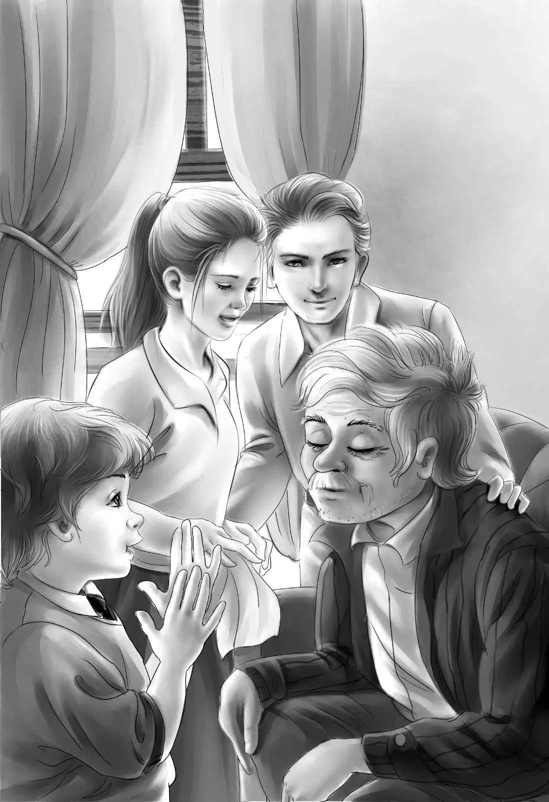

Starting for Home
第二天早晨，大家吃过早饭后都来到台阶上坐下。
“我想回家！”班尼突然说。
“我们都想回家，”亨利说，“但是怎么回去呢？我们带着比尔，独木舟上可容不下四个人。”
“可咱们无论如何得到龙先生的店里去，”杰西说，“否则就拿不到旅行车了。”
“稍等一会儿，”大乔说，“看看待会儿将发生什么事儿！”说完，他朝爱丽丝眨了眨眼。
班尼冲到大乔身边，摇晃着他的肩膀问：“你刚才为什么冲爱丽丝挤眉弄眼的？”
“你想知道吗？”大乔笑着和班尼一起滚到草地上。
“快起来，看看那边是什么？”爱丽丝喊道。她指向路口——从拐角开过来的正是他们的旅行车。
“是旅行车！”班尼大声说，“开车的是龙先生，旁边是他儿子。”班尼高兴得手舞足蹈，又蹦又跳。
龙先生看到他，将车停到小房子门前，走了出来。看到孩子们目瞪口呆的模样，他不由得大笑起来。
“你们没听到吗？”他说，“那天在我的店里，大乔和我订了好多计划。”
“亨利，你应该听到了吧！”大乔笑着说，“当时，我正跟龙先生说‘六天以后来接我们’，你就突然冒了出来。”
“没有，我什么都没听见。”亨利说，“不过龙先生来得正是时候，我们正想回家呢！”
“真想不到，我会期待着结束旅行！”维莉说，“不过现在我真的好想回去看爷爷，我们也好想让比尔快点见到麦格雷戈太太。”
“你们不会已经找到比尔了吧？”龙先生惊讶地问。
“哈哈，我们真的找到了！”班尼开心地说，“还记得戴夫·亨特么？就是那个隐士。”
“当然记得，”龙先生说，“难道他就是比尔？”
杰西说：“没错，这对麦格雷戈太太来说一定是个大惊喜。大乔，我们要不要给爷爷发一封电报？”
“好主意，杰西！”大乔赞道，“我们一找到地方就马上发电报。”
“快点，快点！”班尼喊道，“咱们快出发吧！”
很快，小房子里就开始忙碌起来。大家收拾好行李，放进旅行车的后座。吉姆为他们准备了一大包午餐，在回家的路上吃。
杰西把钱从小铁盒里拿出来，放进她的手提包里。“我来保管这个。”她认真地说。
“咱们带着的这些钞票就好像是一沓废纸。”维莉笑着说。
“它们就是废纸嘛！”班尼一边说一边把自己的行李卷搬到旅行车上。
“麦格雷戈先生，在你们出发前，您要不要把长胡子剪了？”吉姆来送午餐的时候说，“我来帮您剪吧！”
“你觉得怎么样，比尔？”大乔问，“想剪掉吗？”
“当然想。”比尔说，“我不是说过吗，剪掉胡子才像比尔·麦格雷戈啊！”
于是，吉姆帮比尔剪掉了长胡子，还帮他刮了脸。大家都在旁边好奇地观看着。

“变化太大了！”大乔说，“您看上去帅多了，比尔。”
“真的很帅！”吉姆说，“不信您自己看看，麦格雷戈先生。”
“是啊，您的脸变得又光滑又好看！”班尼说，“麦格雷戈太太会更喜欢您的。”
“哦，天哪！”杰西突然说，“咱们把独木舟给忘了，总不能把它们丢在这儿吧！”
“当然不能，”龙先生说，“所以我才把儿子带来了，我们会把船划回去的。帐篷也不用担心，我们都会一起带回去的。”
班尼拉着比尔的手说：“比尔，你知道麦格雷戈太太住在哪里后，一定会很吃惊的。她现在住在爷爷的漂亮大房子里。”
比尔笑着对小男孩说：“我太熟悉那座房子了。”
“可是这栋小房子怎么办，戴夫——不，比尔？”吉姆问，“还有树林里的小木屋？”
“都留给你吧。”比尔轻声说，“你一直都对我很好，经常给我吃的，可我甚至连声谢谢都没说过。”
“不值一提！”吉姆说，“我才应该谢谢你呢，从来没有人一天之内送给我两栋房子！”
一切都安排妥当之后，由大乔开车，比尔和班尼坐在旅行车的前排，爱丽丝和维莉坐在中间，亨利和杰西则坐在后排。
“我们终于要回家喽！”班尼兴奋地大喊，“大乔，咱们找到了比尔，找回了钱，爷爷一定会非常高兴吧？”
大乔将旅行车调了个头，孩子们则不停地和吉姆挥手道别，直到车子驶出了老村子。
“小伙子，”比尔突然说，“铁盒子里有多少钱？”
“都是百元大钞，”班尼答道，“一共有四千元。”
“四千元！”比尔激动地说，“是这个数！你们知道是谁把钱放在那里的吗？”
“不太清楚，”大乔轻声说，“还是你来告诉我们吧！”
“估计是我的亲哥哥山姆，”比尔难过地说，“现在我终于明白整件事情了。”
“那快讲讲吧，”杰西央求道，“把您知道的都告诉我们吧！”
“好吧。”比尔无力地开口说道，“你们听说过那些赛马吧？我为奥登先生卖了两匹赛马。”
“那位奥登先生不是爷爷，”杰西打断比尔，“他是曾祖父，已经过世了。”
“噢，天哪！应该如此。”比尔说，“不过我打工的时候，已经习惯叫他奥登先生了。你们的爷爷是詹姆斯·奥登。好了，说回我的故事吧！当时我哥哥山姆要我把卖马的钱给他，说他能替我赚回三倍的钱，因此我就把钱给了哥哥。”
“是您住在岛上时发生的事吧？”亨利问。
“是的！他让我什么都别说，直接来缅因州，然后很快就能带着更多的钱回家，还给奥登先生了。”
“后来怎样了？”爱丽丝问。
“我来到了这里，来见我哥哥，”比尔说，“再后来，我听说他被汽车撞死了。我翻遍了整个屋子，也找不到铁盒子。就连他的狐朋狗友也不知道盒子的下落。因此，我锁上了小黄屋，住到了树林里。”
“小黄屋？您是说奇异岛上的小黄屋吗？”亨利不解地问。
“不，我说的是老村子里的那栋小黄屋。”
“可我们住的那座房子是棕色的啊，比尔！”杰西轻声说。
“哦，是的，我的天！”比尔喃喃低语道，“它已经变成棕色了。但是它以前是黄色的，已经有40年没刷过油漆了。”